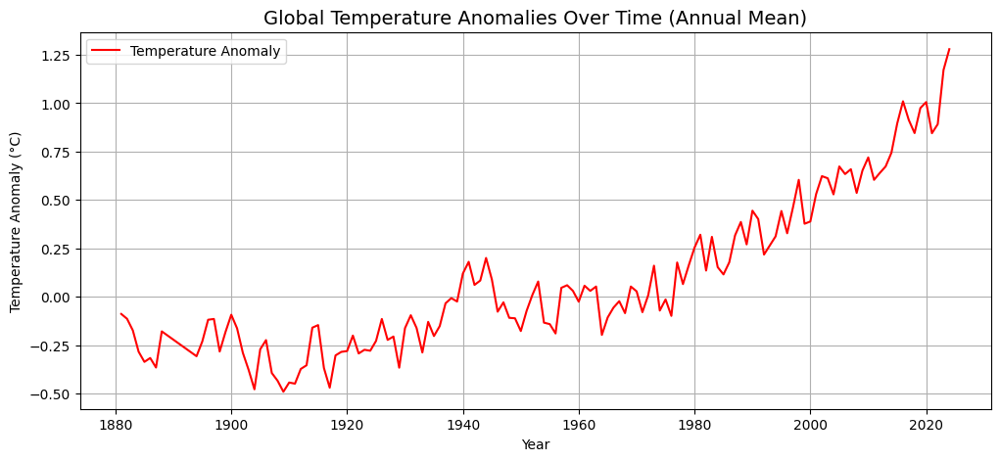

plt.figure(figsize=(12,5))
plt.plot(merged['Year'], merged['Sunspots'], label='Sunspots', color='orange')
plt.title('Sunspots Over Time (Annual Mean)', fontsize=14)
plt.xlabel('Year')
plt.ylabel('Sunspot Number (dimensionless)')
plt.grid(True)
plt.legend()
plt.show()
plt.figure(figsize=(12,5))
plt.plot(merged['Year'], merged['TSI'], label='Total Solar Irradiance', color='green')
plt.title('Total Solar Irradiance (TSI) Over Time (Annual Mean)', fontsize=14)
plt.xlabel('Year')
plt.ylabel('TSI (W/m²)')
plt.grid(True)
plt.legend()
plt.show()
plt.figure(figsize=(12,5))
plt.plot(merged['Year'], merged['Temperature'], label='Temperature Anomaly', color='red')
plt.title('Global Temperature Anomalies Over Time (Annual Mean)', fontsize=14)
plt.xlabel('Year')
plt.ylabel('Temperature Anomaly (°C)')
plt.grid(True)
plt.legend()
plt.show()

